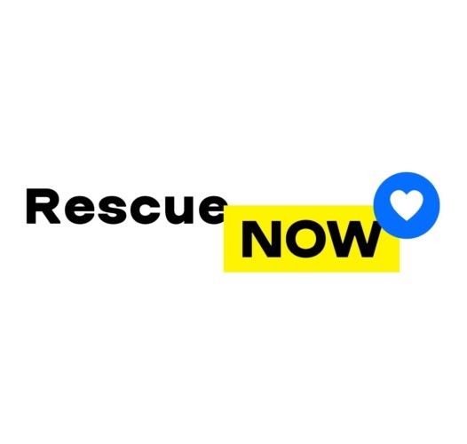
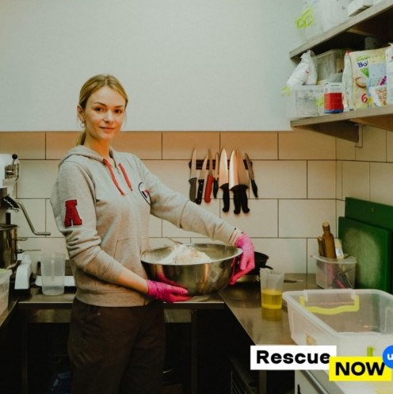
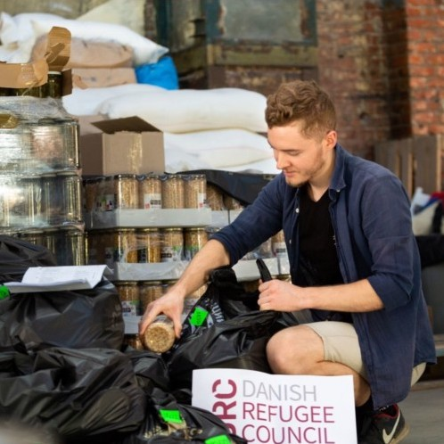
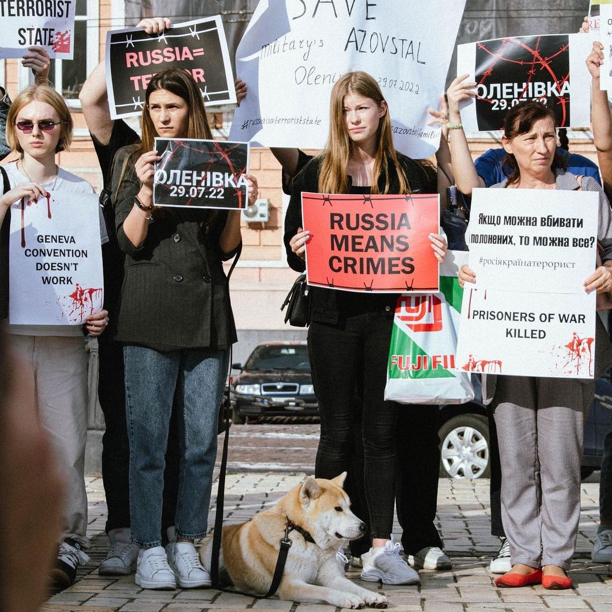
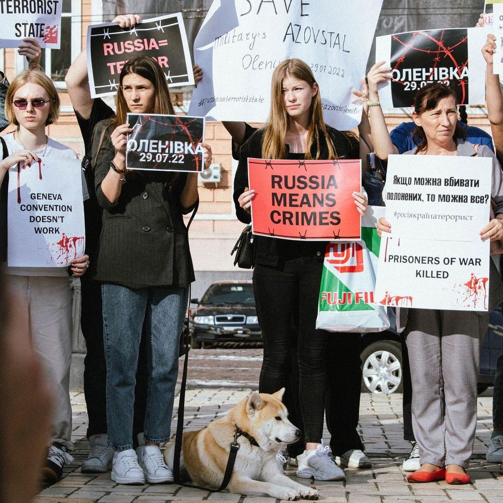
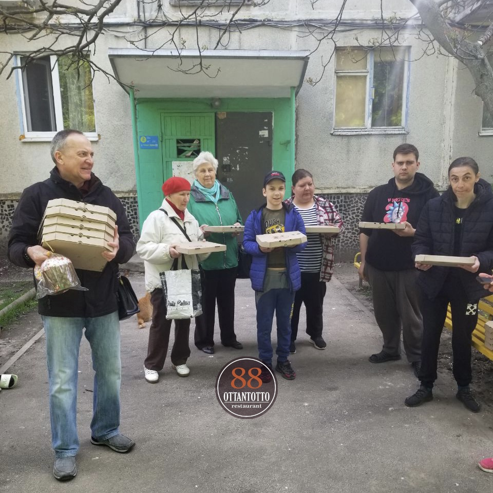
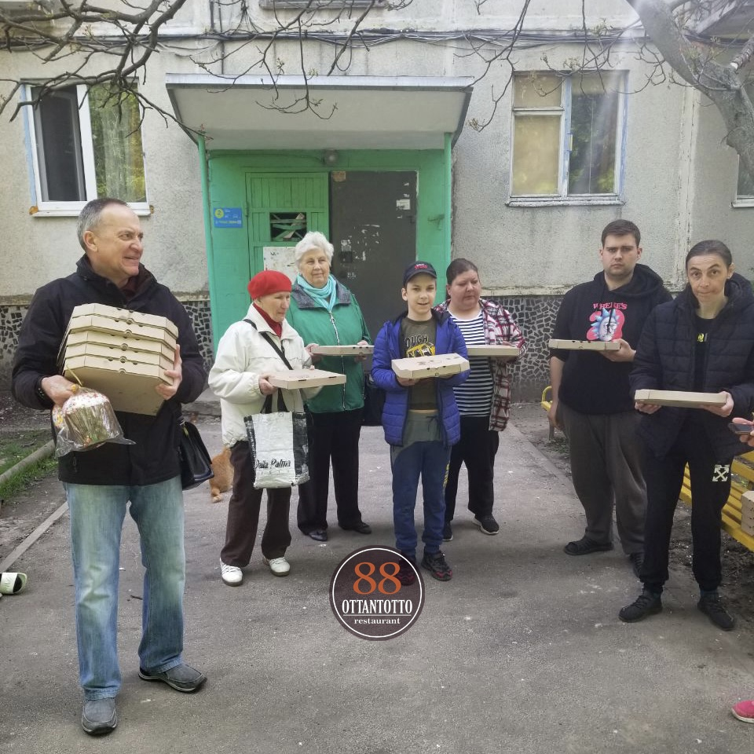

Rescue now





 

L'organisation est créée par des épouses, des sœurs, des filles et d'autres proches des défenseurs d'azovstali. L'organisation a deux objectifs principaux: aider les défenseurs capturés et aider les familles des combattants capturés ou tués à azovstali. En outre, l'organisation est engagée dans le soutien médiatique et la couverture de la situation avec les héros ukrainiens en captivité.


Un rééducateur sportif de Kharkiv, qui est également bénévole et aide gratuitement les militaires et les résidents locaux pendant cette période difficile. Grâce à lui, de nombreuses familles de Kharkiv et des villages voisins reçoivent de la nourriture, médicaments, des articles ménagers et d'hygiène. Il organise lui-même l'assistance sans le soutien de l'État ou de grandes organisations bénévoles officielles.


Go peremoga est une organisation publique à Kharkiv qui fournit une assistance à la population civile et à l'armée. Ils achètent du matériel, de la nourriture, des médicaments et des produits d'hygiène pour les personnes âgées, les handicapés et les familles avec enfants. Ils aident à la mise à disposition d'un hôpital local. Sauvez les animaux des territoires occupés. Et aussi aider avec l'équipement de l'unité militaire "Kraken" (multicoptères, voitures, armure de corps et plus).
belaykh@icloud.com |
||
Monobank carte: 5375414114553208 Anastasiya P. |


 

Le restaurant est situé à Kharkiv et prépare des déjeuners gratuits pour les volontaires et les militaires, et ils ont également un projet "Pizza suspendue". Vous payez une pizza (ou des pizzas) (1 pizza - 6€), choisissez à qui vous voulez la donner (militaires, médecins, réfugiés ou victimes locales des hostilités) et écrivez-en dans les commentaires du transfert. Sur chaque boîte à pizza, écrivez le nom du donneur ou le souhait que vous souhaitez transmettre.
Une fondation de bénévoles à Kharkiv, qui est engagée dans l'évacuation des personnes des zones de combat les plus dangereuses, et fournit également une assistance humanitaire aux personnes handicapées. Chaque mois, ils aident des centaines de personnes handicapées et âgées, dont des dizaines sont sous leur patronage permanent. L'équipe de la fondation est composée de jeunes gens gentils, réactifs et créatifs, dont beaucoup consacrent toute leur vie au travail de la fondation.
IBAN: UA913366770000026005052563740
Nom de l`entreprise: CO “CHARITABLE FOUNDATION “RESCUE NOW”
Nom de la banque: JSC CB “PRIVATBANK”, 1D HRUSHEVSKOHO STR., KYIV, 01001, UKRAINE
Swift-code: PBANUA2X
Adresse de la banque: Vysochanka, Zarichna street 55, Ivano-Frankivska oblast, Ukraine, 71177